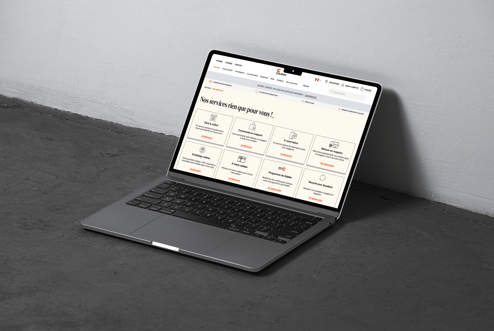
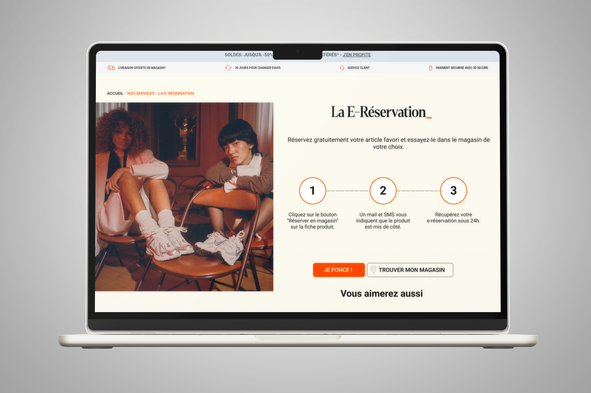
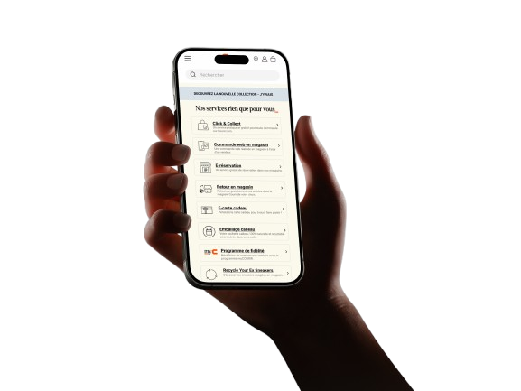

Refonte du parcours
omnicanal — Courir
Repenser les pages dédiées aux services omnicanaux de Courir pour maximiser leur exposition, clarifier l'offre et offrir une expérience de navigation fluide sur desktop et mobile.

Les pages dédiées aux services omnicanaux de Courir souffraient de plusieurs lacunes : défilement excessif pour accéder aux informations, design peu attractif et navigation peu intuitive. Les utilisateurs ne comprenaient pas rapidement ce que la marque proposait au-delà de la vente en ligne.
L'objectif était double : maximiser l'exposition des services (E-réservation, Click & Collect, Commande en magasin…) et créer une interface visuellement engageante qui encourage l'exploration.
Une approche méthodique en plusieurs étapes, de l'analyse des besoins à la livraison des maquettes finales.
Une architecture en deux niveaux : une page générale listant tous les services avec des CTAs simples et épurés (maximum deux lignes explicatives par service), et des pages dédiées pour chaque service avec leur propre design.



« Initialement, la demande était de rendre ces pages très utilitaires. J'ai voulu les rendre non seulement fonctionnelles, mais aussi esthétiquement plaisantes — en combinant interface intuitive et design attrayant. »
Sur mobile, j'ai introduit un menu déroulant pour obtenir un premier aperçu des services sans surcharger la page. En cliquant, l'utilisateur accède à une description détaillée — fonctionnalité et esthétisme réunis pour une navigation épurée.


Le projet a démontré une approche réfléchie et structurée, mettant l'accent sur l'optimisation de l'expérience utilisateur et la satisfaction des besoins des visiteurs.
Ce qui m'a le plus marqué : lors des réunions de validation avec mes supérieurs, c'est ma version qui a été retenue. Cette expérience a renforcé ma confiance dans ma capacité à répondre aux attentes tout en apportant ma propre vision créative.
« Ce projet a été incroyablement enrichissant. Initialement guidé, j'ai pu répondre aux attentes tout en apportant ma vision créative — et c'est ma version qui a été validée. »